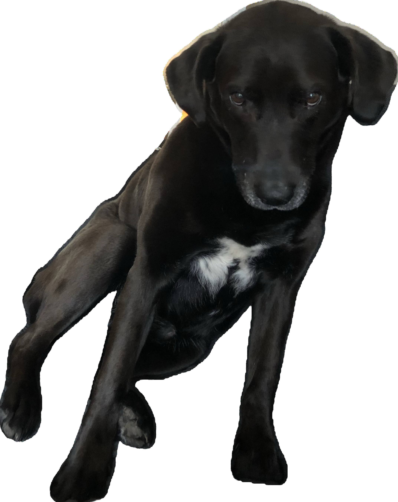

Chicago O’hare (ORD) is the most convenient airport. The Blue Line train from O’hare is the crown jewel of Chicago and will cost $5. At the airport, just follow the “Train to City” signs, tap to pay, and get on whichever train is boarding (it is impossible to get on the wrong train- they’re all going the same way). Of course, you can also take a 30 minute cab into the city which will cost ~$50. If you have any questions, just give us a call!

The Robey: Center of Wicker Park, steps from the Damen Blue Line stop. It's pricey, but it's a Marriott hotel if you have points with them.
Chicago Athletic Association: This is the only downtown hotel that we know and love. It used to be a men's only club in the early 20th century, but now all gender identities can eat french fries by the fireplace. Another pricy one, but get this: it's a Hyatt.
Hyatt Place Wicker Park: ~15 minute walk from the “Division” Blue Line stop, and right across the street from the Hollywood Grill open 24 hours baby.
Wicker Park Inn: Scurto family tested, approved.
Ray’s Bucktown B&B: Real Chicago energy.
Airbnb: We suggest finding a spot on the Northwest Side near a Blue Line stop. Neighborhoods to search: Wicker Park, Bucktown, Humboldt Park, West Town, Ukrainian Village, Logan Square.
If you’d prefer to stay close to Sunday’s venue and a bit further away from the hustle and bustle of the city, we recommend finding a hotel or airbnb in Oak Park. Be sure to check out Frank Lloyd Wright’s Home & Studio!